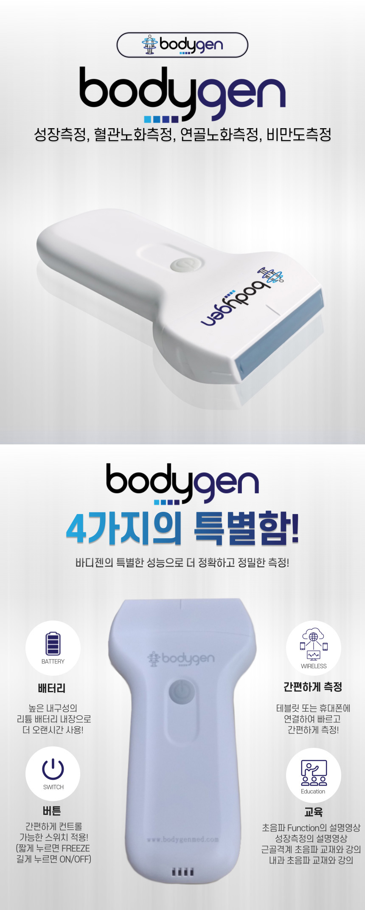
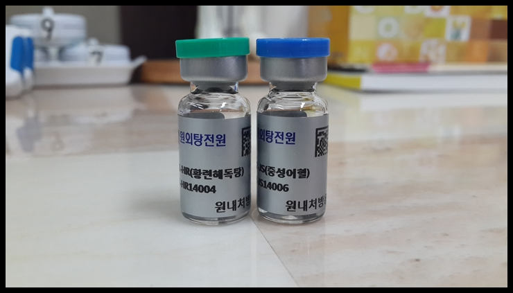
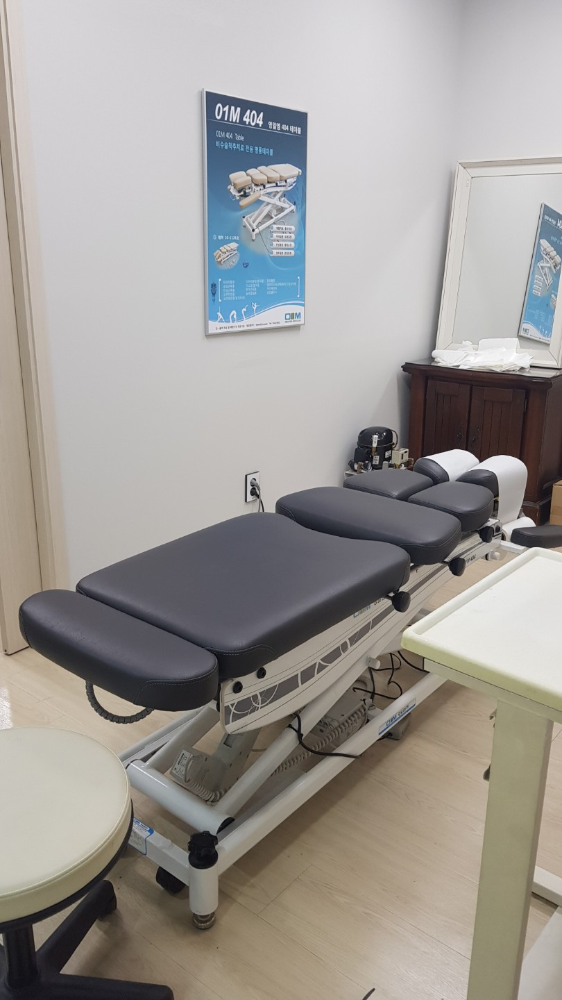
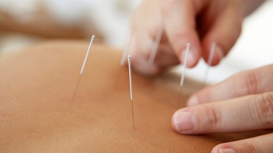
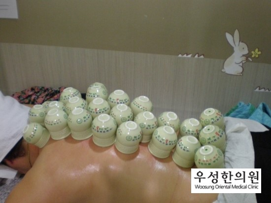
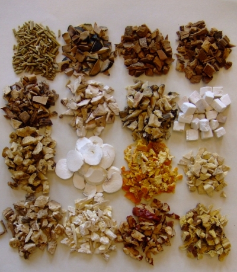

일산 우성한의원은 30년 임상 노하우와 초음파 영상 진단을 바탕으로,
문제가 발생한 부위를 직접 확인하며 침 치료, 초음파 유도 약침, 추나요법을 통해 척추·관절 질환의 회복을 돕습니다.
겉으로 드러나지 않는 깊은 곳의 염증과 신경 눌림을 짐작만으로 치료하지 않습니다.
우성한의원은 초음파 기기를 통해 통증을 유발하는 정확한 위치를 파악한 후,
침 치료로 기혈을 소통시키고, 초음파 유도 약침으로 염증을 줄이며, 추나요법으로 틀어진 구조를 바로잡는
맞춤형 집중 치료를 시행하여 회복을 앞당깁니다.
정밀한 초음파 유도 약침, 구조를 회복하는 추나요법, 기혈 순환을 돕는 침 치료를
유기적으로 결합하여 통증의 원인에 다각도로 접근합니다.

초음파 기기를 통해 뼈, 근육, 인대, 신경의 상태를 눈으로 직접 확인하며, 통증의 원인이 되는 부위를 데이터로 세밀하게 파악합니다.

초음파 화면으로 염증 부위를 실시간으로 확인하며, 환자의 증상과 체질에 맞는 정제된 한약 추출물을 병변 부위에 정확히 주입하여 염증 완화와 조직 재생을 돕습니다.

전문 추나베드를 활용하여 잘못된 자세나 사고로 인해 틀어진 척추와 관절, 뭉친 근막을 원장님이 직접 손으로 밀고 당겨 바르게 교정합니다.

경혈을 자극하여 막힌 기혈의 소통을 원활하게 하고 뭉친 근육의 긴장을 풀어줍니다. 정통 침과 뜸 치료를 활용하여 통증을 줄이고 신체의 자연 치유력을 높이는 데 도움을 줍니다.

음압과 온기를 동시에 전달하여 딱딱하게 굳은 근육을 풀어주는 불부항(火罐) 치료와 함께, 통증 부위의 혈류 순환을 원활하게 돕는 맞춤형 한방 물리치료를 병행합니다.

만성적인 척추·관절 질환은 뼈와 근육에 영양을 공급하는 기능이 떨어진 경우가 많습니다. 꼼꼼한 진단 후, 약해진 연골과 인대를 강화하고 자생력을 기르는 데 도움을 주는 맞춤 한약을 처방합니다.
📍 주소:
경기도 고양시 일산서구 고양대로 726 (일산동), 4층
📞 전화번호:
031-975-3075
※ 일산역(경의중앙선) 인근 위치
※ 주차장 이용 등 자세한 안내는 한의원으로 문의해 주세요.